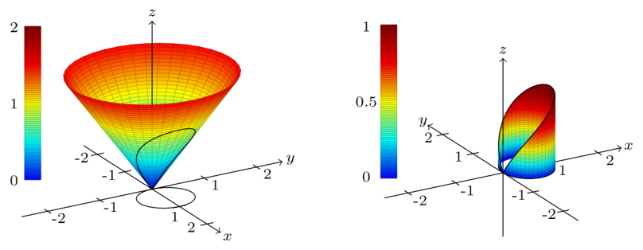

Table of Contents
Multivariable Calculus

NARROW DISPLAY WARNING
You are most likely using a tablet or mobile device in portrait orientation. This website is best viewed using a typical computer screen with the browser window maximized.
Viewing this website in portrait orientation can cause problems with equations being longer than the screen width (you can scroll to the right), images being poorly sized, and the font size of maths text being much smaller than regular text. If your only option is a tablet or mobile device, your viewing experience will be better if you view this website in landscape orientation. You might need to refresh the page to fix any problems after rotating.
Double integrals in polar coordinates are useful for integrating over radially symmetric regions in the $xy$-plane, but require a scaling factor to work correctly.
Going back to $u$ substitution in single variable calculus where $x = f(u)$, the $\text{d}x$ would change to $f'(u)\text{d}u$ to account for any stretching and shrinking of the $x$-axis. The same idea applies to a substitution of $x=r\cos(\theta)$ and $y=r\sin(\theta)$ from Cartesian to polar coordinates, but it's not obvious what the scaling factor for the $\text{d}r\text{d}\theta$ area rectangles should be, or how to calculate it.
Part of the problem is the double integral doesn't know anything about what coordinate system is being used. The literal interpretation of every double integral is summing over little rectangles. The goal is to integrate over the region $R$ on the left, but the integral on the right is over a rectangle with length $2$ and width $\dfrac{\pi}{4}$, not a wedge of a circle.
\begin{equation} \iint\limits_{R} f(x,y) \text{ d}x\text{d}y \quad \neq \quad \int_{\pi/8}^{3\pi/8} \int_{1}^{3} f \big(r\cos(\theta),r\sin(\theta)\big) \text{ d}r\text{d}\theta \end{equation}The method to calculate the scaling factor in general uses the Jacobian, but the scaling factor for $\text{d}r\text{d}\theta$ can be derived geometrically for a Cartesian to polar substitution.
The area of one of the wedges on the left with side length $\Delta r$ and arc $\Delta \theta$ can be calculated using the formula for the area of a circle. To put the value of $r$ in the center of the wedge, the ring has inner radius $r - \dfrac{\Delta r}{2}$ and outer radius $r + \dfrac{\Delta r}{2}$.
\begin{align} \text{Ring area} &= \pi \left(r + \dfrac{\Delta r}{2} \right)^{2} - \pi \left(r - \dfrac{\Delta r}{2} \right)^{2} \\ &= \pi \left(r^{2} + r \Delta r + \dfrac{\Delta r^{2}}{4} \right) - \pi \left(r^{2} - r \Delta r + \dfrac{\Delta r^{2}}{4} \right) \\ &= 2\pi r \Delta r \end{align}That's the area of the entire ring, but the wedge is only a fraction $\dfrac{\Delta \theta}{2\pi}$ of a complete $2\pi$ rotation.
\begin{align} \text{Wedge area} &= \dfrac{\Delta \theta}{2\pi}(\text{Ring area}) \\ &= \dfrac{\Delta \theta}{2\pi} 2\pi r \Delta r \\ &= r \Delta r \Delta \theta \end{align}Taking the limit as the wedge shrinks toward the center point $(r,\theta)$ with $\Delta r$ and $\Delta \theta$ going to zero gives the conversion from Cartesian to polar.
\begin{equation} \lim_{\Delta r,\Delta \theta \rightarrow 0} \text{Wedge area} = r \text{d} r \text{d} \theta \end{equation}So the change of variables from Cartesian to polar needs a scaling factor of $r$ in the double integral to work correctly.
\begin{equation} \iint\limits_{R} f(x,y) \text{ d}x\text{d}y \quad = \quad \int_{\pi/8}^{3\pi/8} \int_{1}^{3} f \big(r\cos(\theta),r\sin(\theta)\big) ~ r \text{d}r\text{d}\theta \end{equation}Interpreting the integral over the region $R$ as the volume of a solid with height $1$ and base the region $R$ on the left.
The volume of the solid on the right can be calculated using geometry with the area of the trapezoid the base length times the average of the two side heights.
\begin{align} \iint\limits_{R} 1 \text{ d}x\text{d}y \quad &= \quad \int_{\pi/8}^{3\pi/8} \int_{1}^{3} r \text{d}r\text{d}\theta \\ (\text{wedge area})(\text{height}) \quad &= \quad (\text{length})(\text{trapezoid area}) \\ \frac{\dfrac{3\pi}{8} - \dfrac{\pi}{8}}{2\pi}(\pi 3^{2} - \pi 1^{2})(1) \quad &= \quad \left(\frac{3\pi}{8} - \frac{\pi}{8}\right) (3-1) \left(\frac{3+1}{2}\right) \\ \pi \quad &= \quad \pi \end{align}And the volumes are equal!
The previous derivation is dependent on $r \geq 0$. If a region is integrated over where $r$ is interpreted as negative, then $\text{d}A = r \text{d}r\text{d}\theta$ comes out negative. The double integral can still output the correct value by picking the $\text{d}r$ integral bounds correctly, but it's a mess. It's much easier to make sure $r$ is always positive, if possible.
An example is the volume under a cone over a region R bounded by $r = \cos(\theta)$, which is a unit circle centered at $(x,y) = (0.5,0)$.
\begin{equation} \iint\limits_{R} \sqrt{x^{2}+y^{2}} \text{ d}x\text{d}y = \iint\limits_{R} r^{2} \text{ d}r\text{d}\theta \end{equation} One choice for the $\text{d}\theta$ bounds is $0 \leq \theta \leq \pi$, but that causes negative values of $r$ for $r(\theta) = \cos(\theta)$.
Because of this, the double integral in polar coordinates with these bounds evaluates to zero.
\begin{equation} \iint\limits_{R} \sqrt{x^{2}+y^{2}} \text{ d}x\text{d}y \quad \neq \quad \int_{0}^{\pi}\int_{0}^{\cos(\theta)} r^{2} \text{ d}r\text{d}\theta = 0 \end{equation}The volume under the cone is definitely not zero, so this is wrong. This could be fixed by being careful and using absolute values, but it's a mess and not worth the effort. Much better to change the bounds on the $\text{d}\theta$ integral
A better choice for the $\text{d}\theta$ bounds is $\dfrac{-\pi}{2} \leq \theta \leq \dfrac{\pi}{2}$ because the values of $r$ for $r(\theta) = \cos(\theta)$ are all non-negative.
\begin{equation} \iint\limits_{R} \sqrt{x^{2}+y^{2}} \text{ d}x\text{d}y = \int_{-\frac{\pi}{2}}^{\frac{\pi}{2}}\int_{0}^{\cos(\theta)} r^{2} \text{ d}r\text{d}\theta = \frac{4}{9} \end{equation}Now the volume evaluates to something reasonable.
We can compare to another volume that is easy to calculate that will be approximately equal. Instead of the volume under cone, we can calculate the volume under a plane $z = x$ so it has the same slope as the cone in the $xz$-plane.
\begin{equation} \iint\limits_{R} x \text{ d}x\text{d}y = \int_{-\frac{\pi}{2}}^{\frac{\pi}{2}}\int_{0}^{\cos(\theta)} r^{2}\cos(\theta) \text{ d}r\text{d}\theta = \frac{\pi}{8} \end{equation}This can be calculated without an integral because we know the formula for the volume of a cylinder, and this cylinder with radius $\dfrac{1}{2}$ and height 1 has been cut in half.
\begin{equation} \frac{1}{2} \text{(Volume of Cylinder)} = \frac{1}{2}\pi \left(\frac{1}{2}\right)^{2}(1) = \frac{\pi}{8} \end{equation}The two results are fairly close.
\begin{equation} \frac{4}{9} \approx 0.4444 \qquad 0.3927 \approx \frac{\pi}{8} \end{equation}Find the volume under the cone $z = \sqrt{x^{2}+y^{2}}$ over a circle of radius $0.5$ centered at $(x,y) = (0.5,0)$.
This is the example from the explanation section above.
Find the volume under the plane $z = x$ over a circle of radius $0.5$ centered at $(x,y) = (0.5,0)$.
This is the example from the explanation section above.
Find the volume of the paraboloid $z = 3-x^{2}-y^{2}$ above the $xy$-plane.
Find the area of one petal of the rose curve $r = \cos(3\theta)$.
Find the area of the cardioid $r = 1 + \sin(\theta)$.
Find the area of the limacon $r = \dfrac{1}{2} + \sin(\theta)$.